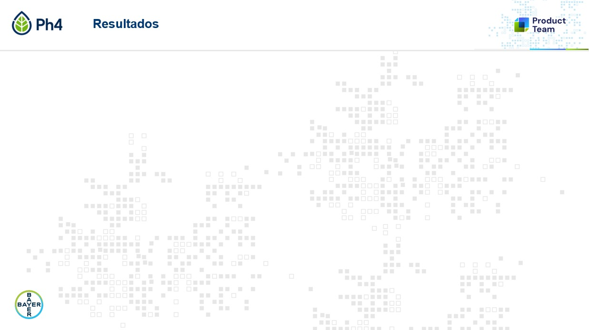

Si llegaste a esta página, quiero que sepas que es un desarrollo personal hecho con mucho aprendizaje. Espero que te sea útil. ¡Gracias!
Paso 1 de 2
Datos generales
Protocolo, trial y localidad son comunes. El momento y la fecha pueden ser únicos o múltiples.
Cuando cargues varios momentos, cada foto tendrá dos desplegables: momento y tratamiento/parcela.
Por default se genera 1 slide por tratamiento/parcela. Si elegís 2 slides y un tratamiento tiene 4 fotos, la app divide 2 fotos en la primera slide y 2 en la segunda.
Fondo de slide
La app arranca con tu fondo por default, pero podés cambiarlo cuando quieras.

Espacio para fotos más grande
Protocolo · Trial · Localidad · Momento · Fecha · Tratamiento / Parcela
Para cambiar el fondo fijo del repo, reemplazá fondo-default.jpg por otra imagen 16:9 con el mismo nombre. La opción sin fondo genera las fotos más grandes y pone la etiqueta encima de cada foto.
Carga y asignación de fotos
Subí todas las fotos y elegí a qué tratamiento/parcela pertenece cada una.